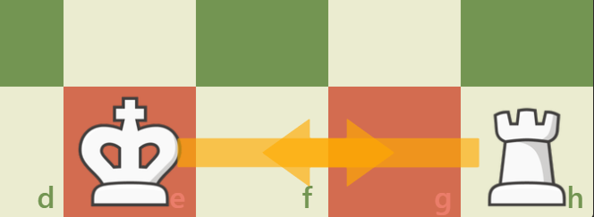
킹 보호 기술
캐슬링
킹과 룩을 동시에 움직여 킹을 안전한 곳으로 옮기는 특별한 수예요. 킹과 룩이 한 번도 움직이지 않았고, 사이에 기물이 없어야 사용할 수 있어요.
어려운 규칙은 짧게, 중요한 장면은 사진으로 보여주는 체스 안내 웹페이지입니다. 아래 버튼을 누르면 필요한 설명만 바로 볼 수 있어요.
체스판에서 무슨 일이 일어나는지 감 잡기
체스를 처음 보는 사람이 가장 먼저 알아두면 좋은 특수 규칙이에요.

킹과 룩을 동시에 움직여 킹을 안전한 곳으로 옮기는 특별한 수예요. 킹과 룩이 한 번도 움직이지 않았고, 사이에 기물이 없어야 사용할 수 있어요.
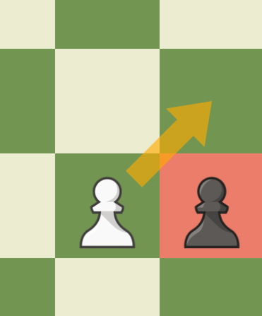
상대 폰이 방금 두 칸 전진했을 때, 한 칸만 움직인 것처럼 보고 잡는 규칙이에요. 기회가 생긴 바로 다음 수에만 가능해요.
게임 초반에 어떤 모양으로 기물을 꺼낼지 정하는 시작 전략이에요.
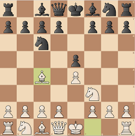
초보자도 쉽게 배우는 대표적인 오프닝이에요. 중앙을 차지하고 기물을 빠르게 꺼내 공격을 준비하기 좋아요.
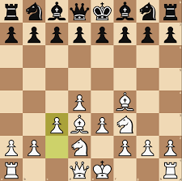
상대가 어떤 수를 두어도 비슷한 진형으로 진행하기 쉬운 오프닝이에요. 튼튼하지만 조금 답답하게 느껴질 수도 있어요.
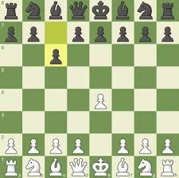
흑이 안전하게 버티면서 반격을 준비하는 오프닝이에요. 폰 구조가 튼튼해서 안정적인 플레이에 잘 어울려요.
한순간에 판세를 뒤집는 체스의 핵심 기술들이에요.
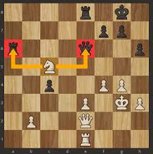
하나의 기물로 여러 기물을 동시에 공격하는 전술이에요. 상대는 모두 피하기 어렵기 때문에 기물을 잃기 쉬워요.
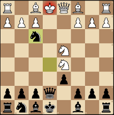
두 기물이 동시에 킹을 공격하는 체크예요. 막거나 잡는 선택지가 거의 없어 킹이 직접 움직여야 하는 경우가 많아요.
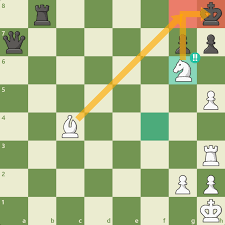
기물을 일부러 내주고 더 강한 공격 기회나 체크메이트를 노리는 전술이에요. 계산이 맞으면 결정타가 돼요.
상대 킹이 더 이상 피할 수 없게 만드는 마무리 방법이에요.
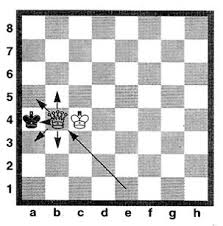
퀸이 상대 킹 바로 옆에서 체크를 걸고, 아군 기물이 퀸을 보호해 끝내는 메이트예요.
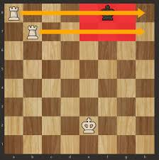
룩 두 개가 줄을 번갈아 막으면서 상대 킹을 끝까지 몰아붙이는 체크메이트예요.
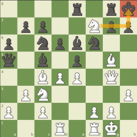
킹이 자기 편 기물에 둘러싸여 움직일 수 없을 때, 나이트 체크로 끝내는 메이트예요.